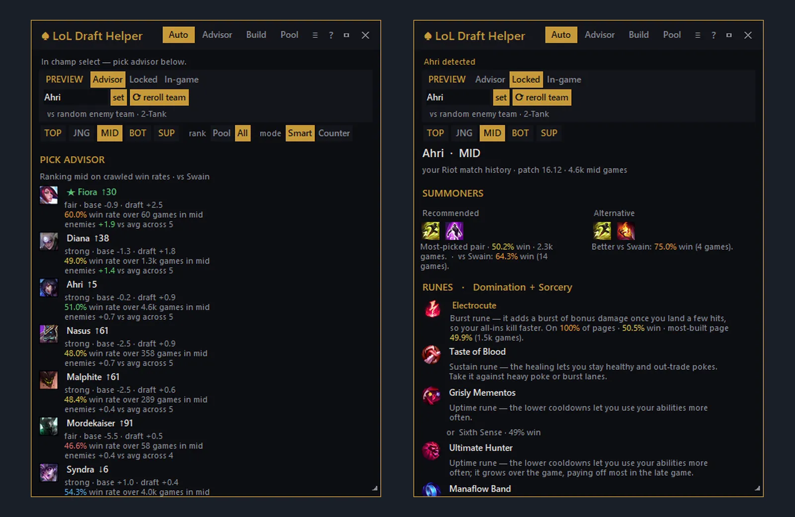

League draft helper
A desktop overlay for League of Legends champion select, fed by its own crawler of ranked matches.
- Period
- 2026-06 – 2026-07
- My role
- Sole developer
- Team
- Alone
- Status
- Shipped
- Built with
- Python, tkinter, SQLite, Riot API, pytest
- Made at
- Hobby

Summary
A desktop overlay that ranks champion picks and suggests builds during League of Legends champion select.
What I did
- Built the overlay and a read-only reader for the local game client.
- Built a crawler that pulls ranked matches through the Riot API into SQLite and aggregates win rates.
- Built a pick advisor and build recommender that weighs matchups, synergy and the enemy picks, and says "not enough data yet" instead of guessing on a small sample.